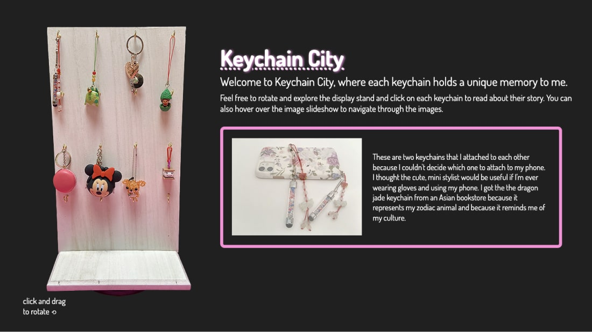

UX / UI
development
2021
This is a web page I designed for a school project, where we collected documentations of something that represent ourselves and developed them into visual prompts for exploration, narrative, and storytelling. Over the years, I have collected several unique keychains, so I developed a website that presents these keychains in a way that narrates my life and expresses who I am. Users can interact with the webpage by spinning the display stand and exploring any keychain. To the right of the webpage, there is a slideshow of the keychain's photos, where the user can control the slides and read about it.
I began with brainstorming some ideas on how I wanted to display my keychains. I thought of featuring the photos in polaroids, but that idea didn't seem to suit my theme. So, I looked for some inspiration on Google and thought of hanging my keychains on some form of wall. I sketched out many different ideas, until I finally landed on the three-dimensional spinning display stand concept. I knew this idea would be hard to implement based on what I have learned in the class, but I felt that this was the perfect way for me to display my keychains and allow users to interact with them.
I went over my idea with the professor and she suggested that I take photos of the stand from different angles to get the 360 effect. I used white foam core board as my backdrop, however when I tried cropping out the background in Photoshop, I had a hard time differentiating the background from the stand. So, I attached a highly contrasting neon pink paper, making the cropping easier. I had finished editing many of the photos before I realized that the neon pink color had reflected on the stand. Due to time constraints, it would not have been a good idea to retake the photos and re-crop them, so, I thought of designing my webpage to match the neon pink color.
I was aiming for a minimalistic look. I wanted users to be able to rotate the display stand, click on any keychain, view a close up of it and read about it's story. It was not easy getting everything to fit on the webpage, especially with the instructions, but continuously editing my images and text until they were at an appropriate size helped.
What I found really challenging in creating the interface, was having to edit all 30+ images of the display stand. It was super time consuming. I also had to optimize my images to the exact size that they would appear on the web, which made my large images somewhat blurry. I tried several different filters and resizing in Photoshop, until I found that sharpening and noise reduction were the best methods to fix them.
This webpage was developed using HTML, CSS, and vanilla JavaScript. It is specifically designed at a 1366 x 768 viewport as that is the current most popular website dimension.
This was my first prototype. It was very rough: the spinning interaction and the option to click on every keychain and control the slideshow images were still a work in progress. During usability testing, my users were mainly concerned about how imperceptible the instructions were. It matched the text in the description box, so their eyes completely skipped over it. They suggested that I make the text larger and consider separating the welcome text and instructions, so that each of them have a more defined area for itself.
Following the feedback I received, I adjusted the text as suggested and this time users noticed it. In this prototype, I had completed coding the interactions. Users were now able to hover over any keychain and control the slideshow images.
When users were interacting with the stand, I noticed that they had a hard time getting it to spin at first. Some users felt that the stand was rotating too fast per drag, while others said the opposite. When trying to select a keychain on the stand, a user suggested that I change the hover selection to a click because the hovering forced users to avoid hovering over other keychains if they wanted to move their mouse to interact with the slideshow. The same user also noticed that the previous and next buttons were not functioning properly.
The malfunctions that users pointed out in the rotating stand and the slideshow buttons were one of my biggest challenges I've encountered. I had a hard time figuring out the math for the stand to rotate smoothly per drag. I researched multiple references and experimented with different calculations, but it seemed to make the rotation even worse. I left it as is and it surprisingly rotated perfectly fine afterwards. As for the strange lag when trying to rotate the stand in the beginning, I believe that it has something to do with the browser trying to catch up with the user's click and drag. I think I would've been able to fix this if I were able to figure out the right calculations.
For the previous and next arrows on the slideshow, sometimes users would have to double click on the button for it to respond. The functionality was very inconsistent and I wasn't sure what was causing it, especially since there were no errors in the console. Both of these challenges stumped me and even though I spent a lot of time trying to figure them out, I never quite succeeded.
Although it was very tedious and time consuming, I am most proud of the 360 display stand I implemented with vanilla JavaScript. Coding the spinning interaction was a lot simpler than I thought. I also learned how important it is to minimize image file sizes and how to work around blurry images. I am slightly disappointed with the unresolved flaws in my project, but I am still proud of what I accomplished and learned in such a short amount of time.